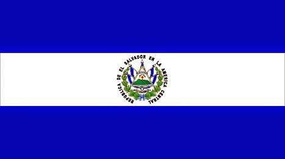
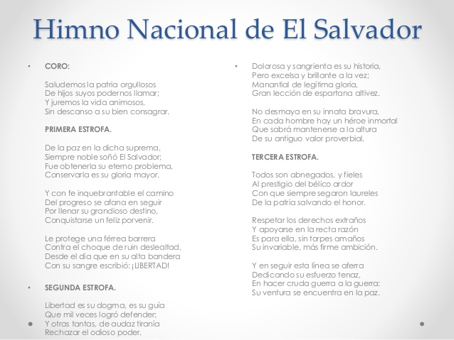

El Salvador
Historia
El territorio salvadoreño forma parte del área de Mesoamérica, y se encuentra ubicado en una región que sirvió de paso de objetos e ideas a través del tiempo. Las primeras evidencias culturales en El Salvador se remontan a ocho mil años, justamente en el período arcaico (8000 a 1500 a. C.), época de grandes migraciones a diversas zonas mesoamericanas, una de ellas en la costa del Pacífico del país. Entre el período preclásico temprano (1500—900 a. C.) y medio (900—500~400 a. C.), se asentaron grupos protomayas en la región occidental. Para el caso, en el área de Chalchuapa se han encontrado restos de antiguos asentamientos, probablemente emigrados de Chiapas y Guatemala. Desde esta zona partieron grupos hacia lugares como Jayaque o Antiguo Cuscatlán en el período preclásico medio. En el preclásico tardío (500~400 a. C.—200~250 d. C.), existió desarrollo cultural y relaciones de tipo lingüística, escultórica y comercial con las tierras altas de Guatemala, especialmente con la cerámica Usulután y la obsidiana. Además, las tres zonas del país (occidental, central y oriental) se encontraban pobladas; y se incrementó la construcción de montículos como en Quelepa, Atiquizaya y El Trapiche. Sin embargo, el florecimiento se vio interrumpido en varios sectores por la erupción del volcán de Ilopango en el 260 d. C. En el período clásico temprano (200~250—400 d. C.), en Quelepa —poblado por Lencas y que no fue afectado por la erupción de Ilopango— hubo progreso notable y se establecieron relaciones con poblaciones de tierras altas y del sur del istmo. Para el período clásico medio (400 a 650 d. C.) existió repoblación del occidente y centro del territorio por grupos mayas-chortí. Una de las localidades era Joya de Cerén, ocupada en el siglo VI y cuyos habitantes se vieron afectados por la erupción del volcán Caldera; también la zona del Lago de Güija fue un lugar de intercambio importante con el occidente de Honduras, valle de Motagua y Petén. Por otra parte, en esa época se establecieron los Cacaoperas en la región oriental.
Extension territorial
En la actualidad su extension territorial cuenta con 21 041 km2.
Lista de departamentos
El Salvador posee 14 departamentos: Santa Ana, Ahuachapan, Sonsonate, Chalatenango, La Libertad, San Salvador, Cuscatlan, La Paz, Cabanas, San Vicente, Usulutan, San Miguel, Morazan y La Union
Simbolos Patrios
Bandera Nacional
La bandera nacional de El Salvador está compuesta por tres franjas horizontales de igual tamaño; la de arriba y la de abajo son de color azul cobalto y la del centro es blanca. Significado: El azul significa los dos océanos que rodean a Centro América, también representa el cielo salvadoreño. El blanco representa la paz que debe reinar siempre en nuestra tierra, así como también el acuerdo que debe existir entre todos para avanzar juntos hacia adelante como una sola nación. Fue adoptada oficialmente el día 17 de mayo de 1912.
Escudo Nacional
El escudo nacional de El Salvador es el emblema nacional que representa al país, tanto dentro del territorio nacional como fuera de nuestras fronteras patrias. Se adoptó oficialmente en 1912, junto con la bandera actual. Su creador fue el del calígrafo salvadoreño Rafael Barraza Rodríguez, quien resultara ganador de un concurso donde se recibieron otras 300 propuestas.

Himno Nacional
Es la pieza musical que representa el patriotismo de El Salvador. Es entonado en cualquier acto cívico, oficial o deportivo que se realiza en el país o en el extranjero cuando participan salvadoreños. El Himno Nacional de El Salvador fue compuesto por el general salvadoreño Juan José Cañas y el músico italiano Juan Aberle. Se usó por primera vez el 15 de septiembre de 1879, pero fue adoptado oficialmente hasta el 13 de noviembre de 1953.
Ave Nacional
El torogoz o talapo es el ave nacional de El Salvador, fue declarada como tal por un Acuerdo Legislativo que se aprobó el día 21 de octubre de 1999. Actualmente es un ave en peligro de extinción y solo se puede ver en lugares montañosos. El nombre científico del torogoz es Eumomota superciliosa; es una especie de ave coraciforme de la familia Momotidae. Habita en Centroamérica desde la península de Yucatán hasta Costa Rica. Su plumaje es de colores llamativos, así como las plumas que cuelgan de su cola. Representa a la fauna nacional.

Flor Nacional
La flor de izote es la flor nacional de El Salvador. Es una flor de color blanca que crece de un arbusto que florece mayormente entre los meses de abril y mayo; es común observar que se comercializa en mercados populares o supermercados del país, ya que es también comestible. Se declaró como uno de los símbolos patrios de El Salvador el 21 de diciembre de 1995. Representa a la flora nacional.

Arbol Nacional
En realidad existen dos árboles nacionales de El Salvador, los cuales fueron adoptados mediante un decreto legislativo el 1 de septiembre de 1939. Estos árboles son los siguientes: Maquilishuat El maquilishuat es un árbol muy hermoso, ya que en la época donde se caen sus hojas es cubierto totalmente por unas flores rosadas. Este árbol puede medir hasta 15 metros de altura. Sus grandes y majestuosas flores de color rosa, ofrecen distintos grados de intensidad en su coloración. Cuando el maquilishuat florece, es uno de los más bellos de la región. Árbol de maquilishuat Bálsamo El bálsamo es un árbol robusto, de madera recia y pesada, originario de la zona comprendida entre El Salvador y el sur de México, que puede llegar a medir entre 15 a 25 metros, su nombre en náhuatl significa “ungüento de colibrí”. De su corteza se extrae una resina natural o savia. Era utilizado por los indígenas de América para dolores de estómago y cicatrizar heridas.